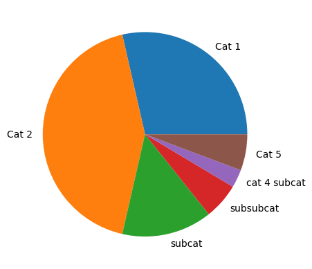
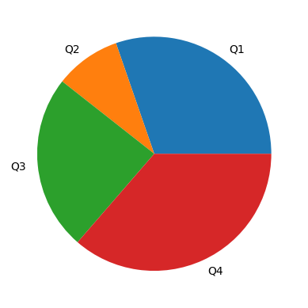

time_keeper = TimeKeeper()time
Functions to keep track of time required by every question.
Time Keeper
An object to keep track of time:
TimeKeeper
TimeKeeper ()
Initialize self. See help(type(self)) for accurate signature.
For categories
After initialization,
it can be used to keep track of time by passing it the minutes an exercise should take and the category it belongs to
time_keeper.record(10, 'Cat 1')
time_keeper.record(15, 'Cat 2')
time_keeper.record(5, ['Cat 3', 'Cat 3/subcat'])
time_keeper.record(2, ['Cat 3', 'Cat 3/subcat/subsubcat'])It’s also fine to pass a json-serialized list (or string)
time_keeper.record(1, json.dumps(['Cat 4', 'Cat 4/cat 4 subcat']))
time_keeper.record(2, json.dumps('Cat 5'))time_keeper.df| time | |
|---|---|
| category | |
| Cat 1 | 10 |
| Cat 2 | 15 |
| subcat | 5 |
| subsubcat | 2 |
| cat 4 subcat | 1 |
| Cat 5 | 2 |
print(time_keeper)Accumulated time: 35 minutestime_keeper.plot()<Axes: >
For questions
After initialization,
time_keeper = TimeKeeper()it can keep tabs on the time required by every question
time_keeper.record_question(10, 'Q1')
time_keeper.record_question(3, 'Q2')
time_keeper.record_question(8, 'Q3')
time_keeper.record_question(12, 'Q4')time_keeper.df| time | |
|---|---|
| category | |
| Q1 | 10 |
| Q2 | 3 |
| Q3 | 8 |
| Q4 | 12 |
time_keeper.plot()
print(time_keeper)Accumulated time: 33 minutes